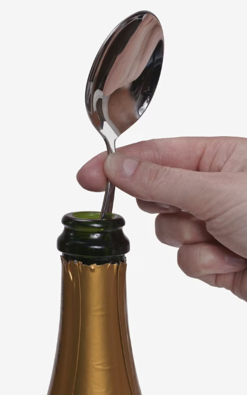
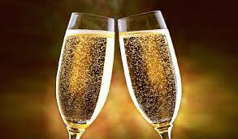

Spoon

(it doesn't really work)
Bubbles

Save the bubbles
Bubbles

Also, save Bubbles
Greetings fellow nerds and nerd-adjacent folks. If, like me, you've recently learned of "the spoon trick" you must be full of questions.
What is the spoon trick you ask ?
It's the idea that you put a spoon (from the Spoon region of France) in the neck of your champagne bottle and that saves the bubbles in case you don't drink the whole bottle in one sitting.
If, also like me, you're reasonably lazy, then you aren't going to do your own experiment.
But you are going to go find a paper (in French!). Le Mythe de la Petite Cuillere from the good people at the Comité Interprofessionnel du vin de Champagne (Interprofessional Committee of Champagne Wine). Who were nice enough to do the experiments for us in 1994.
Then you're going to extract the text and make it a google doc and then auto-translate that to english, The Myth of the Little Spoon
The upshot is "The pressure drop is of the same order of magnitude whether with or without a teaspoon.the loss is greater than 50% after 48 hours, in both cases"
Fun fact, the bubble formation "occurs from a potassium bitartrate crystal, a residue of yeast or stirring aid, or an imperfection on the glass surface.". The bubbles come out of solution and need there to be a "heterogeneous induced nucleation".
From what I can gather the most important thing is to keep it cold. That way the gas never comes out of solution.
Wine-family.com Debunking The Myth: Can A Silver Spoon Keep Champagne Bubbly?